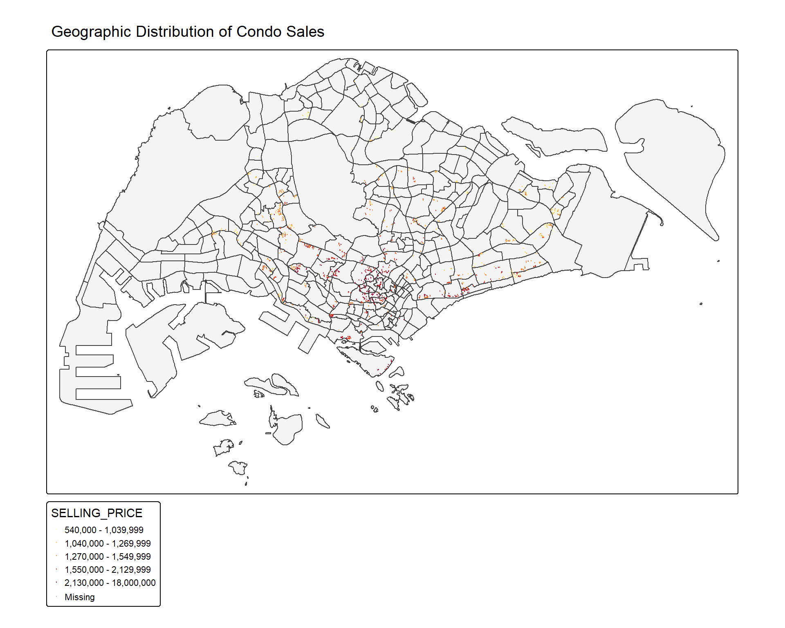
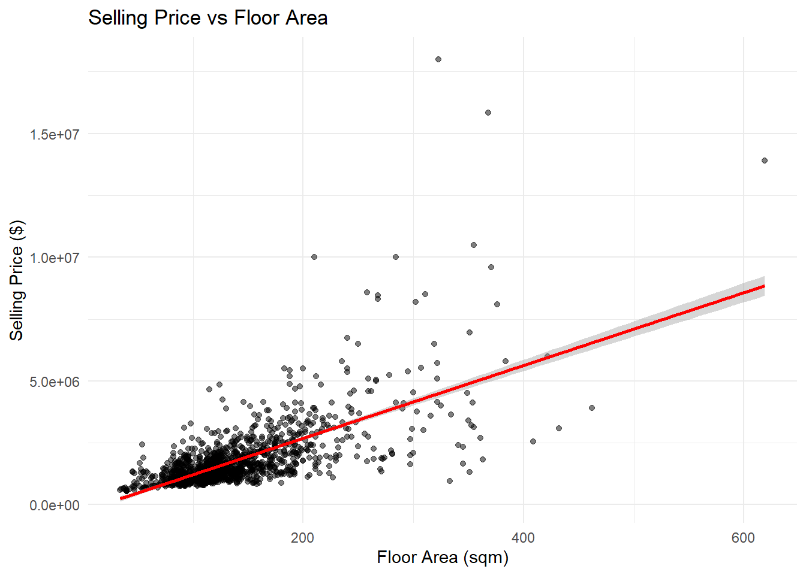
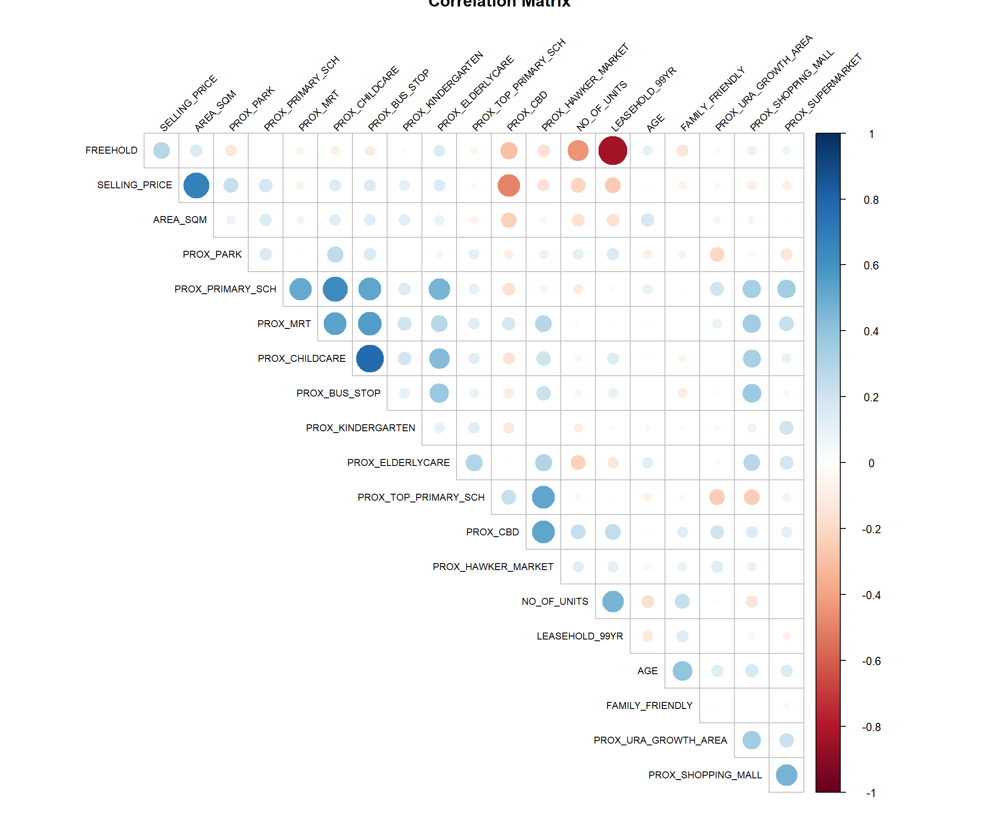
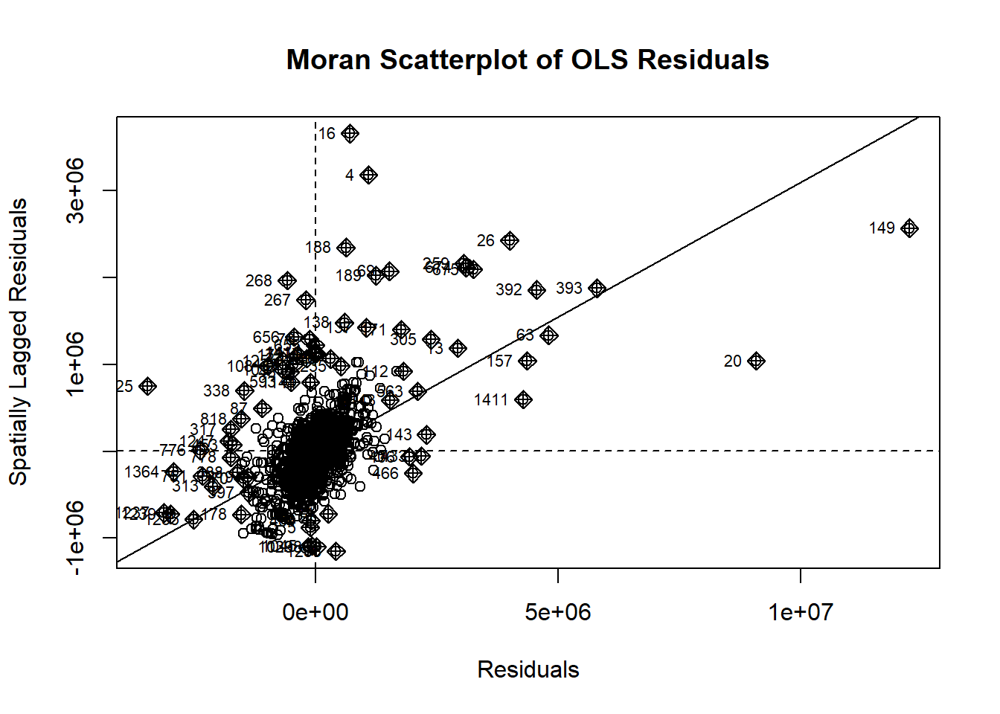
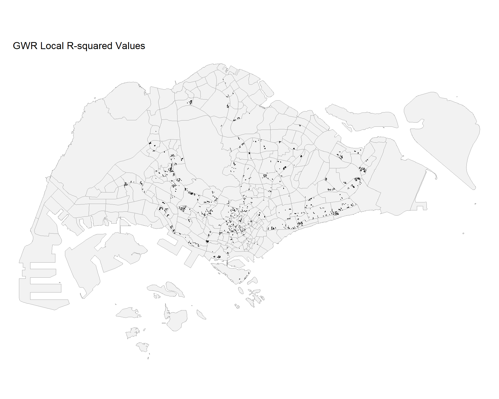

pacman::p_load(sf, tidyverse, tmap, spdep, GWmodel,
ggpubr, corrplot, plotly,
olsrr, devtools, parallel)Hands-on Exercise 07: Geographically Weighted Regression
1. Overview
Geographically Weighted Regression (GWR) is a spatial statistical technique that recognizes that traditional “global” regression models may be limited when spatial processes vary across a study area. In this hands-on exercise, we will learn how to build hedonic pricing models using GWR methods to examine the relationships between condo selling prices and various structural and locational characteristics in Singapore.
Learning Objectives
By the end of this session, you will be able to:
- Build hedonic pricing models using OLS and GWR methods
- Calibrate GWR models using fixed and adaptive bandwidths
- Visualize and interpret GWR outputs
- Compare global and local regression models
2. The Data
Two datasets will be used:
- URA Master Plan 2014 subzone boundaries (geospatial)
- Condo resale prices 2015 (aspatial)
3. Getting Started
3.1 Loading Required Packages
3.2 Importing Geospatial Data
# Read Master Plan 2014 Subzone Boundary
mpsz <- st_read(dsn = "data/geospatial",
layer = "MP14_SUBZONE_WEB_PL",
quiet = TRUE) %>%
st_transform(crs = 3414) # SVY21
# Check the data
glimpse(mpsz)Rows: 323
Columns: 16
$ OBJECTID <int> 1, 2, 3, 4, 5, 6, 7, 8, 9, 10, 11, 12, 13, 14, 15, 16, 17, …
$ SUBZONE_NO <int> 1, 1, 3, 8, 3, 7, 9, 2, 13, 7, 12, 6, 1, 5, 1, 1, 3, 2, 2, …
$ SUBZONE_N <chr> "MARINA SOUTH", "PEARL'S HILL", "BOAT QUAY", "HENDERSON HIL…
$ SUBZONE_C <chr> "MSSZ01", "OTSZ01", "SRSZ03", "BMSZ08", "BMSZ03", "BMSZ07",…
$ CA_IND <chr> "Y", "Y", "Y", "N", "N", "N", "N", "Y", "N", "N", "N", "N",…
$ PLN_AREA_N <chr> "MARINA SOUTH", "OUTRAM", "SINGAPORE RIVER", "BUKIT MERAH",…
$ PLN_AREA_C <chr> "MS", "OT", "SR", "BM", "BM", "BM", "BM", "SR", "QT", "QT",…
$ REGION_N <chr> "CENTRAL REGION", "CENTRAL REGION", "CENTRAL REGION", "CENT…
$ REGION_C <chr> "CR", "CR", "CR", "CR", "CR", "CR", "CR", "CR", "CR", "CR",…
$ INC_CRC <chr> "5ED7EB253F99252E", "8C7149B9EB32EEFC", "C35FEFF02B13E0E5",…
$ FMEL_UPD_D <date> 2014-12-05, 2014-12-05, 2014-12-05, 2014-12-05, 2014-12-05…
$ X_ADDR <dbl> 31595.84, 28679.06, 29654.96, 26782.83, 26201.96, 25358.82,…
$ Y_ADDR <dbl> 29220.19, 29782.05, 29974.66, 29933.77, 30005.70, 29991.38,…
$ SHAPE_Leng <dbl> 5267.381, 3506.107, 1740.926, 3313.625, 2825.594, 4428.913,…
$ SHAPE_Area <dbl> 1630379.27, 559816.25, 160807.50, 595428.89, 387429.44, 103…
$ geometry <MULTIPOLYGON [m]> MULTIPOLYGON (((31495.56 30..., MULTIPOLYGON (…4. Importing and Preparing Aspatial Data
4.1 Import Condo Resale Data
# Read condo resale data
condo_resale <- read_csv("data/aspatial/Condo_resale_2015.csv",
show_col_types = FALSE)
# Check data structure
glimpse(condo_resale)Rows: 1,436
Columns: 23
$ LATITUDE <dbl> 1.287145, 1.328698, 1.313727, 1.308563, 1.321437,…
$ LONGITUDE <dbl> 103.7802, 103.8123, 103.7971, 103.8247, 103.9505,…
$ POSTCODE <dbl> 118635, 288420, 267833, 258380, 467169, 466472, 3…
$ SELLING_PRICE <dbl> 3000000, 3880000, 3325000, 4250000, 1400000, 1320…
$ AREA_SQM <dbl> 309, 290, 248, 127, 145, 139, 218, 141, 165, 168,…
$ AGE <dbl> 30, 32, 33, 7, 28, 22, 24, 24, 27, 31, 17, 22, 6,…
$ PROX_CBD <dbl> 7.941259, 6.609797, 6.898000, 4.038861, 11.783402…
$ PROX_CHILDCARE <dbl> 0.16597932, 0.28027246, 0.42922669, 0.39473543, 0…
$ PROX_ELDERLYCARE <dbl> 2.5198118, 1.9333338, 0.5021395, 1.9910316, 1.121…
$ PROX_URA_GROWTH_AREA <dbl> 6.618741, 7.505109, 6.463887, 4.906512, 6.410632,…
$ PROX_HAWKER_MARKET <dbl> 1.76542207, 0.54507614, 0.37789301, 1.68259969, 0…
$ PROX_KINDERGARTEN <dbl> 0.05835552, 0.61592412, 0.14120309, 0.38200076, 0…
$ PROX_MRT <dbl> 0.5607188, 0.6584461, 0.3053433, 0.6910183, 0.528…
$ PROX_PARK <dbl> 1.1710446, 0.1992269, 0.2779886, 0.9832843, 0.116…
$ PROX_PRIMARY_SCH <dbl> 1.6340256, 0.9747834, 1.4715016, 1.4546324, 0.709…
$ PROX_TOP_PRIMARY_SCH <dbl> 3.3273195, 0.9747834, 1.4715016, 2.3006394, 0.709…
$ PROX_SHOPPING_MALL <dbl> 2.2102717, 2.9374279, 1.2256850, 0.3525671, 1.307…
$ PROX_SUPERMARKET <dbl> 0.9103958, 0.5900617, 0.4135583, 0.4162219, 0.581…
$ PROX_BUS_STOP <dbl> 0.10336166, 0.28673408, 0.28504777, 0.29872340, 0…
$ NO_Of_UNITS <dbl> 18, 20, 27, 30, 30, 31, 32, 32, 32, 32, 34, 34, 3…
$ FAMILY_FRIENDLY <dbl> 0, 0, 0, 0, 0, 1, 1, 0, 1, 1, 0, 0, 0, 0, 0, 0, 0…
$ FREEHOLD <dbl> 1, 1, 1, 1, 1, 1, 1, 1, 1, 0, 1, 1, 1, 1, 1, 1, 1…
$ LEASEHOLD_99YR <dbl> 0, 0, 0, 0, 0, 0, 0, 0, 0, 0, 0, 0, 0, 0, 0, 0, 0…# Check variable names and fix case sensitivity issues
names(condo_resale) [1] "LATITUDE" "LONGITUDE" "POSTCODE"
[4] "SELLING_PRICE" "AREA_SQM" "AGE"
[7] "PROX_CBD" "PROX_CHILDCARE" "PROX_ELDERLYCARE"
[10] "PROX_URA_GROWTH_AREA" "PROX_HAWKER_MARKET" "PROX_KINDERGARTEN"
[13] "PROX_MRT" "PROX_PARK" "PROX_PRIMARY_SCH"
[16] "PROX_TOP_PRIMARY_SCH" "PROX_SHOPPING_MALL" "PROX_SUPERMARKET"
[19] "PROX_BUS_STOP" "NO_Of_UNITS" "FAMILY_FRIENDLY"
[22] "FREEHOLD" "LEASEHOLD_99YR" # Standardize variable names if needed
if("NO_Of_UNITS" %in% names(condo_resale)) {
condo_resale <- condo_resale %>%
rename(NO_OF_UNITS = NO_Of_UNITS)
}
# Summary statistics
summary(condo_resale) LATITUDE LONGITUDE POSTCODE SELLING_PRICE
Min. :1.240 Min. :103.7 Min. : 18965 Min. : 540000
1st Qu.:1.309 1st Qu.:103.8 1st Qu.:259849 1st Qu.: 1100000
Median :1.328 Median :103.8 Median :469298 Median : 1383222
Mean :1.334 Mean :103.8 Mean :440439 Mean : 1751211
3rd Qu.:1.357 3rd Qu.:103.9 3rd Qu.:589486 3rd Qu.: 1950000
Max. :1.454 Max. :104.0 Max. :828833 Max. :18000000
AREA_SQM AGE PROX_CBD PROX_CHILDCARE
Min. : 34.0 Min. : 0.00 Min. : 0.3869 Min. :0.004927
1st Qu.:103.0 1st Qu.: 5.00 1st Qu.: 5.5574 1st Qu.:0.174481
Median :121.0 Median :11.00 Median : 9.3567 Median :0.258135
Mean :136.5 Mean :12.14 Mean : 9.3254 Mean :0.326313
3rd Qu.:156.0 3rd Qu.:18.00 3rd Qu.:12.6661 3rd Qu.:0.368293
Max. :619.0 Max. :37.00 Max. :19.1804 Max. :3.465726
PROX_ELDERLYCARE PROX_URA_GROWTH_AREA PROX_HAWKER_MARKET PROX_KINDERGARTEN
Min. :0.05451 Min. :0.2145 Min. :0.05182 Min. :0.004927
1st Qu.:0.61254 1st Qu.:3.1643 1st Qu.:0.55245 1st Qu.:0.276345
Median :0.94179 Median :4.6186 Median :0.90842 Median :0.413385
Mean :1.05352 Mean :4.5981 Mean :1.27987 Mean :0.458903
3rd Qu.:1.35122 3rd Qu.:5.7550 3rd Qu.:1.68578 3rd Qu.:0.578474
Max. :3.94916 Max. :9.1554 Max. :5.37435 Max. :2.229045
PROX_MRT PROX_PARK PROX_PRIMARY_SCH PROX_TOP_PRIMARY_SCH
Min. :0.05278 Min. :0.02906 Min. :0.07711 Min. :0.07711
1st Qu.:0.34646 1st Qu.:0.26211 1st Qu.:0.44024 1st Qu.:1.34451
Median :0.57430 Median :0.39926 Median :0.63505 Median :1.88213
Mean :0.67316 Mean :0.49802 Mean :0.75471 Mean :2.27347
3rd Qu.:0.84844 3rd Qu.:0.65592 3rd Qu.:0.95104 3rd Qu.:2.90954
Max. :3.48037 Max. :2.16105 Max. :3.92899 Max. :6.74819
PROX_SHOPPING_MALL PROX_SUPERMARKET PROX_BUS_STOP NO_OF_UNITS
Min. :0.0000 Min. :0.0000 Min. :0.001595 Min. : 18.0
1st Qu.:0.5258 1st Qu.:0.3695 1st Qu.:0.098356 1st Qu.: 188.8
Median :0.9357 Median :0.5687 Median :0.151711 Median : 360.0
Mean :1.0455 Mean :0.6141 Mean :0.193974 Mean : 409.2
3rd Qu.:1.3994 3rd Qu.:0.7862 3rd Qu.:0.220466 3rd Qu.: 590.0
Max. :3.4774 Max. :2.2441 Max. :2.476639 Max. :1703.0
FAMILY_FRIENDLY FREEHOLD LEASEHOLD_99YR
Min. :0.0000 Min. :0.0000 Min. :0.0000
1st Qu.:0.0000 1st Qu.:0.0000 1st Qu.:0.0000
Median :0.0000 Median :0.0000 Median :0.0000
Mean :0.4868 Mean :0.4227 Mean :0.4882
3rd Qu.:1.0000 3rd Qu.:1.0000 3rd Qu.:1.0000
Max. :1.0000 Max. :1.0000 Max. :1.0000 4.2 Data Preprocessing
# Function to convert factor/character to 0/1
to01 <- function(x) as.numeric(as.factor(x)) - 1
# Convert binary variables to numeric if they aren't already
condo_resale <- condo_resale %>%
mutate(
FREEHOLD = if(is.numeric(FREEHOLD)) FREEHOLD else to01(FREEHOLD),
FAMILY_FRIENDLY = if(is.numeric(FAMILY_FRIENDLY)) FAMILY_FRIENDLY else to01(FAMILY_FRIENDLY),
LEASEHOLD_99YR = if(exists("LEASEHOLD_99YR") && !is.numeric(LEASEHOLD_99YR)) to01(LEASEHOLD_99YR) else LEASEHOLD_99YR
)
# Check for required variables
required_vars <- c("SELLING_PRICE", "AREA_SQM", "AGE", "PROX_CBD", "PROX_MRT")
stopifnot(all(required_vars %in% names(condo_resale)))
# Remove rows with NA values in key variables
condo_resale <- condo_resale %>%
drop_na(SELLING_PRICE, AREA_SQM, AGE)4.3 Convert Aspatial Data to sf Object
# Convert to sf object using coordinates
condo_resale_sf <- st_as_sf(condo_resale,
coords = c("LONGITUDE", "LATITUDE"),
crs = 4326) %>%
st_transform(crs = 3414)
# Check the result
head(condo_resale_sf)Simple feature collection with 6 features and 21 fields
Geometry type: POINT
Dimension: XY
Bounding box: xmin: 22085.12 ymin: 29951.54 xmax: 41042.56 ymax: 34546.2
Projected CRS: SVY21 / Singapore TM
# A tibble: 6 × 22
POSTCODE SELLING_PRICE AREA_SQM AGE PROX_CBD PROX_CHILDCARE PROX_ELDERLYCARE
<dbl> <dbl> <dbl> <dbl> <dbl> <dbl> <dbl>
1 118635 3000000 309 30 7.94 0.166 2.52
2 288420 3880000 290 32 6.61 0.280 1.93
3 267833 3325000 248 33 6.90 0.429 0.502
4 258380 4250000 127 7 4.04 0.395 1.99
5 467169 1400000 145 28 11.8 0.119 1.12
6 466472 1320000 139 22 10.3 0.125 0.789
# ℹ 15 more variables: PROX_URA_GROWTH_AREA <dbl>, PROX_HAWKER_MARKET <dbl>,
# PROX_KINDERGARTEN <dbl>, PROX_MRT <dbl>, PROX_PARK <dbl>,
# PROX_PRIMARY_SCH <dbl>, PROX_TOP_PRIMARY_SCH <dbl>,
# PROX_SHOPPING_MALL <dbl>, PROX_SUPERMARKET <dbl>, PROX_BUS_STOP <dbl>,
# NO_OF_UNITS <dbl>, FAMILY_FRIENDLY <dbl>, FREEHOLD <dbl>,
# LEASEHOLD_99YR <dbl>, geometry <POINT [m]>5. Exploratory Data Analysis
5.1 Distribution of Selling Prices
# Histogram of selling price
p1 <- ggplot(data = condo_resale, aes(x = SELLING_PRICE)) +
geom_histogram(bins = 20, fill = "lightblue", color = "black") +
labs(title = "Distribution of Selling Prices",
x = "Selling Price ($)",
y = "Frequency") +
theme_minimal()
# Log-transformed selling price
p2 <- ggplot(data = condo_resale,
aes(x = log(SELLING_PRICE))) +
geom_histogram(bins = 20, fill = "lightgreen", color = "black") +
labs(title = "Distribution of Log Selling Prices",
x = "Log(Selling Price)",
y = "Frequency") +
theme_minimal()
ggarrange(p1, p2, ncol = 2)
5.2 Geographic Distribution of Condo Sales
# Use plot mode for better performance
tmap_mode("plot")
tm_shape(mpsz) +
tm_polygons(alpha = 0.3) +
tm_shape(condo_resale_sf) +
tm_dots(col = "SELLING_PRICE",
size = 0.02, # Reduced size for better visibility
border.col = "black",
border.lwd = 0.5,
style = "quantile",
palette = "YlOrRd",
title = "Selling Price") +
tm_layout(main.title = "Geographic Distribution of Condo Sales",
main.title.size = 1.2)
5.3 Statistical Summary by Variables
# Summary of key variables
condo_resale %>%
select(SELLING_PRICE, AREA_SQM, AGE, PROX_CBD,
PROX_CHILDCARE, PROX_ELDERLYCARE, PROX_MRT,
PROX_SHOPPING_MALL, NO_OF_UNITS) %>%
summary() SELLING_PRICE AREA_SQM AGE PROX_CBD
Min. : 540000 Min. : 34.0 Min. : 0.00 Min. : 0.3869
1st Qu.: 1100000 1st Qu.:103.0 1st Qu.: 5.00 1st Qu.: 5.5574
Median : 1383222 Median :121.0 Median :11.00 Median : 9.3567
Mean : 1751211 Mean :136.5 Mean :12.14 Mean : 9.3254
3rd Qu.: 1950000 3rd Qu.:156.0 3rd Qu.:18.00 3rd Qu.:12.6661
Max. :18000000 Max. :619.0 Max. :37.00 Max. :19.1804
PROX_CHILDCARE PROX_ELDERLYCARE PROX_MRT PROX_SHOPPING_MALL
Min. :0.004927 Min. :0.05451 Min. :0.05278 Min. :0.0000
1st Qu.:0.174481 1st Qu.:0.61254 1st Qu.:0.34646 1st Qu.:0.5258
Median :0.258135 Median :0.94179 Median :0.57430 Median :0.9357
Mean :0.326313 Mean :1.05352 Mean :0.67316 Mean :1.0455
3rd Qu.:0.368293 3rd Qu.:1.35122 3rd Qu.:0.84844 3rd Qu.:1.3994
Max. :3.465726 Max. :3.94916 Max. :3.48037 Max. :3.4774
NO_OF_UNITS
Min. : 18.0
1st Qu.: 188.8
Median : 360.0
Mean : 409.2
3rd Qu.: 590.0
Max. :1703.0 6. Building Hedonic Pricing Model using OLS
6.1 Simple Linear Regression
# Build simple OLS model with AREA_SQM
condo_ols_simple <- lm(SELLING_PRICE ~ AREA_SQM,
data = condo_resale)
summary(condo_ols_simple)
Call:
lm(formula = SELLING_PRICE ~ AREA_SQM, data = condo_resale)
Residuals:
Min 1Q Median 3Q Max
-3695815 -391764 -87517 258900 13503875
Coefficients:
Estimate Std. Error t value Pr(>|t|)
(Intercept) -258121.1 63517.2 -4.064 5.09e-05 ***
AREA_SQM 14719.0 428.1 34.381 < 2e-16 ***
---
Signif. codes: 0 '***' 0.001 '**' 0.01 '*' 0.05 '.' 0.1 ' ' 1
Residual standard error: 942700 on 1434 degrees of freedom
Multiple R-squared: 0.4518, Adjusted R-squared: 0.4515
F-statistic: 1182 on 1 and 1434 DF, p-value: < 2.2e-16# Visualize the relationship
ggplot(condo_resale, aes(x = AREA_SQM, y = SELLING_PRICE)) +
geom_point(alpha = 0.5) +
geom_smooth(method = "lm", col = "red") +
labs(title = "Selling Price vs Floor Area",
x = "Floor Area (sqm)",
y = "Selling Price ($)") +
theme_minimal()
6.2 Multiple Linear Regression
# Build multiple regression model with all available variables
condo_mlr <- lm(formula = SELLING_PRICE ~ AREA_SQM + AGE +
PROX_CBD + PROX_CHILDCARE + PROX_ELDERLYCARE +
PROX_URA_GROWTH_AREA + PROX_HAWKER_MARKET +
PROX_KINDERGARTEN + PROX_MRT +
PROX_PARK + PROX_PRIMARY_SCH + PROX_TOP_PRIMARY_SCH +
PROX_SHOPPING_MALL + PROX_SUPERMARKET + PROX_BUS_STOP +
NO_OF_UNITS + FAMILY_FRIENDLY + FREEHOLD + LEASEHOLD_99YR,
data = condo_resale)
summary(condo_mlr)
Call:
lm(formula = SELLING_PRICE ~ AREA_SQM + AGE + PROX_CBD + PROX_CHILDCARE +
PROX_ELDERLYCARE + PROX_URA_GROWTH_AREA + PROX_HAWKER_MARKET +
PROX_KINDERGARTEN + PROX_MRT + PROX_PARK + PROX_PRIMARY_SCH +
PROX_TOP_PRIMARY_SCH + PROX_SHOPPING_MALL + PROX_SUPERMARKET +
PROX_BUS_STOP + NO_OF_UNITS + FAMILY_FRIENDLY + FREEHOLD +
LEASEHOLD_99YR, data = condo_resale)
Residuals:
Min 1Q Median 3Q Max
-3471036 -286903 -22426 239412 12254549
Coefficients:
Estimate Std. Error t value Pr(>|t|)
(Intercept) 543071.4 136210.9 3.987 7.03e-05 ***
AREA_SQM 12688.7 370.1 34.283 < 2e-16 ***
AGE -24566.0 2766.0 -8.881 < 2e-16 ***
PROX_CBD -78122.0 6791.4 -11.503 < 2e-16 ***
PROX_CHILDCARE -333219.0 111020.3 -3.001 0.002734 **
PROX_ELDERLYCARE 170950.0 42110.8 4.060 5.19e-05 ***
PROX_URA_GROWTH_AREA 38507.6 12523.7 3.075 0.002147 **
PROX_HAWKER_MARKET 23801.2 29299.9 0.812 0.416739
PROX_KINDERGARTEN 144098.0 82738.7 1.742 0.081795 .
PROX_MRT -322775.9 58528.1 -5.515 4.14e-08 ***
PROX_PARK 564487.9 66563.0 8.481 < 2e-16 ***
PROX_PRIMARY_SCH 186170.5 65515.2 2.842 0.004553 **
PROX_TOP_PRIMARY_SCH -477.1 20598.0 -0.023 0.981525
PROX_SHOPPING_MALL -207721.5 42855.5 -4.847 1.39e-06 ***
PROX_SUPERMARKET -48074.7 77145.3 -0.623 0.533273
PROX_BUS_STOP 675755.0 138552.0 4.877 1.20e-06 ***
NO_OF_UNITS -216.2 90.3 -2.394 0.016797 *
FAMILY_FRIENDLY 142128.3 47055.1 3.020 0.002569 **
FREEHOLD 300646.5 77296.5 3.890 0.000105 ***
LEASEHOLD_99YR -77137.4 77570.9 -0.994 0.320192
---
Signif. codes: 0 '***' 0.001 '**' 0.01 '*' 0.05 '.' 0.1 ' ' 1
Residual standard error: 755800 on 1416 degrees of freedom
Multiple R-squared: 0.652, Adjusted R-squared: 0.6474
F-statistic: 139.6 on 19 and 1416 DF, p-value: < 2.2e-166.3 Check for Multicollinearity
# Prepare numeric data without NA values
num_df <- condo_resale %>%
select(-LATITUDE, -LONGITUDE, -POSTCODE) %>%
select(where(is.numeric)) %>%
drop_na()
# Calculate correlation matrix
cor_matrix <- cor(num_df)
# Plot correlation matrix
corrplot(cor_matrix,
method = "circle",
type = "upper",
diag = FALSE,
order = "hclust",
tl.cex = 0.7,
tl.col = "black",
tl.srt = 45,
title = "Correlation Matrix")
# VIF check using olsrr
ols_vif_tol(condo_mlr) Variables Tolerance VIF
1 AREA_SQM 0.8601326 1.162611
2 AGE 0.7011585 1.426211
3 PROX_CBD 0.4575471 2.185567
4 PROX_CHILDCARE 0.2898233 3.450378
5 PROX_ELDERLYCARE 0.5922238 1.688551
6 PROX_URA_GROWTH_AREA 0.6614081 1.511926
7 PROX_HAWKER_MARKET 0.4373874 2.286303
8 PROX_KINDERGARTEN 0.8356793 1.196631
9 PROX_MRT 0.4949877 2.020252
10 PROX_PARK 0.8015728 1.247547
11 PROX_PRIMARY_SCH 0.3823248 2.615577
12 PROX_TOP_PRIMARY_SCH 0.4878620 2.049760
13 PROX_SHOPPING_MALL 0.4903052 2.039546
14 PROX_SUPERMARKET 0.6142127 1.628100
15 PROX_BUS_STOP 0.3311024 3.020213
16 NO_OF_UNITS 0.6543336 1.528272
17 FAMILY_FRIENDLY 0.7191719 1.390488
18 FREEHOLD 0.2728521 3.664990
19 LEASEHOLD_99YR 0.2645988 3.7793076.4 Revised Model (Removing Multicollinear Variables)
# Build revised model excluding highly correlated variables
condo_mlr2 <- lm(formula = SELLING_PRICE ~ AREA_SQM + AGE +
PROX_CBD + PROX_CHILDCARE + PROX_ELDERLYCARE +
PROX_URA_GROWTH_AREA + PROX_MRT + PROX_PARK +
PROX_PRIMARY_SCH + PROX_SHOPPING_MALL +
PROX_BUS_STOP + NO_OF_UNITS + FAMILY_FRIENDLY +
FREEHOLD,
data = condo_resale)
summary(condo_mlr2)
Call:
lm(formula = SELLING_PRICE ~ AREA_SQM + AGE + PROX_CBD + PROX_CHILDCARE +
PROX_ELDERLYCARE + PROX_URA_GROWTH_AREA + PROX_MRT + PROX_PARK +
PROX_PRIMARY_SCH + PROX_SHOPPING_MALL + PROX_BUS_STOP + NO_OF_UNITS +
FAMILY_FRIENDLY + FREEHOLD, data = condo_resale)
Residuals:
Min 1Q Median 3Q Max
-3470778 -298119 -23481 248917 12234210
Coefficients:
Estimate Std. Error t value Pr(>|t|)
(Intercept) 527633.22 108183.22 4.877 1.20e-06 ***
AREA_SQM 12777.52 367.48 34.771 < 2e-16 ***
AGE -24687.74 2754.84 -8.962 < 2e-16 ***
PROX_CBD -77131.32 5763.12 -13.384 < 2e-16 ***
PROX_CHILDCARE -318472.75 107959.51 -2.950 0.003231 **
PROX_ELDERLYCARE 185575.62 39901.86 4.651 3.61e-06 ***
PROX_URA_GROWTH_AREA 39163.25 11754.83 3.332 0.000885 ***
PROX_MRT -294745.11 56916.37 -5.179 2.56e-07 ***
PROX_PARK 570504.81 65507.03 8.709 < 2e-16 ***
PROX_PRIMARY_SCH 159856.14 60234.60 2.654 0.008046 **
PROX_SHOPPING_MALL -220947.25 36561.83 -6.043 1.93e-09 ***
PROX_BUS_STOP 682482.22 134513.24 5.074 4.42e-07 ***
NO_OF_UNITS -245.48 87.95 -2.791 0.005321 **
FAMILY_FRIENDLY 146307.58 46893.02 3.120 0.001845 **
FREEHOLD 350599.81 48506.48 7.228 7.98e-13 ***
---
Signif. codes: 0 '***' 0.001 '**' 0.01 '*' 0.05 '.' 0.1 ' ' 1
Residual standard error: 756000 on 1421 degrees of freedom
Multiple R-squared: 0.6507, Adjusted R-squared: 0.6472
F-statistic: 189.1 on 14 and 1421 DF, p-value: < 2.2e-16ols_vif_tol(condo_mlr2) Variables Tolerance VIF
1 AREA_SQM 0.8728554 1.145665
2 AGE 0.7071275 1.414172
3 PROX_CBD 0.6356147 1.573280
4 PROX_CHILDCARE 0.3066019 3.261559
5 PROX_ELDERLYCARE 0.6598479 1.515501
6 PROX_URA_GROWTH_AREA 0.7510311 1.331503
7 PROX_MRT 0.5236090 1.909822
8 PROX_PARK 0.8279261 1.207837
9 PROX_PRIMARY_SCH 0.4524628 2.210126
10 PROX_SHOPPING_MALL 0.6738795 1.483945
11 PROX_BUS_STOP 0.3514118 2.845664
12 NO_OF_UNITS 0.6901036 1.449058
13 FAMILY_FRIENDLY 0.7244157 1.380423
14 FREEHOLD 0.6931163 1.4427596.5 Model Diagnostics
# Diagnostic plots
par(mfrow = c(2, 2))
plot(condo_mlr2)
par(mfrow = c(1, 1))
# Additional diagnostic tests
# Normality test
ols_test_normality(condo_mlr2)-----------------------------------------------
Test Statistic pvalue
-----------------------------------------------
Shapiro-Wilk 0.6856 0.0000
Kolmogorov-Smirnov 0.1366 0.0000
Cramer-von Mises 121.0768 0.0000
Anderson-Darling 67.9551 0.0000
-----------------------------------------------# Breusch-Pagan test for heteroscedasticity
ols_test_breusch_pagan(condo_mlr2)
Breusch Pagan Test for Heteroskedasticity
-----------------------------------------
Ho: the variance is constant
Ha: the variance is not constant
Data
-----------------------------------------
Response : SELLING_PRICE
Variables: fitted values of SELLING_PRICE
Test Summary
----------------------------
DF = 1
Chi2 = 4573.0707
Prob > Chi2 = 0.0000 7. Test for Spatial Autocorrelation
7.1 Prepare Spatial Data
# Extract residuals
mlr_residuals <- residuals(condo_mlr2)
condo_resale$mlr_residuals <- mlr_residuals
# Add residuals to sf object
condo_resale_sf$mlr_residuals <- mlr_residuals
# Convert to sp object for GWmodel
condo_resale_sp <- as(condo_resale_sf, "Spatial")
condo_resale_sp@data$mlr_residuals <- mlr_residuals7.2 Visualize Residuals
# Map residuals
tmap_mode("plot")
tm_shape(mpsz) +
tm_polygons(alpha = 0.4) +
tm_shape(condo_resale_sf) +
tm_dots(col = "mlr_residuals",
size = 0.01, # Further reduced size
style = "quantile",
palette = "-RdBu",
title = "MLR Residuals") +
tm_layout(main.title = "Spatial Distribution of OLS Residuals",
main.title.size = 1.2)
7.3 Moran’s I Test
# Create neighbors
coords <- st_coordinates(condo_resale_sf)
knn_nb <- knn2nb(knearneigh(coords, k = 8))
knn_listw <- nb2listw(knn_nb, style = "W")
# Moran's I test on residuals
moran.test(mlr_residuals, knn_listw)
Moran I test under randomisation
data: mlr_residuals
weights: knn_listw
Moran I statistic standard deviate = 25.806, p-value < 2.2e-16
alternative hypothesis: greater
sample estimates:
Moran I statistic Expectation Variance
0.3098623365 -0.0006968641 0.0001448283 # Moran scatterplot
moran.plot(mlr_residuals, knn_listw,
main = "Moran Scatterplot of OLS Residuals",
xlab = "Residuals",
ylab = "Spatially Lagged Residuals",
labels = FALSE,
quiet = TRUE)8. Building Hedonic Pricing Models using GWR
8.1 Adaptive Bandwidth GWR with Optimization
# Check for cache file
cache_file <- "gwr_cache.rds"
if(file.exists(cache_file)){
cat("Loading cached GWR results...\n")
gwc <- readRDS(cache_file)
bw_adaptive <- gwc$bw
gwr_adaptive <- gwc$gwr
cat("Optimal adaptive bandwidth:", bw_adaptive, "neighbors\n")
} else {
cat("Calculating optimal bandwidth (this may take a few minutes)...\n")
# Determine optimal adaptive bandwidth using AICc with parallel processing
bw_adaptive <- bw.gwr(
formula = SELLING_PRICE ~ AREA_SQM + AGE +
PROX_CBD + PROX_CHILDCARE + PROX_ELDERLYCARE +
PROX_URA_GROWTH_AREA + PROX_MRT + PROX_PARK +
PROX_PRIMARY_SCH + PROX_SHOPPING_MALL +
PROX_BUS_STOP + NO_OF_UNITS + FAMILY_FRIENDLY +
FREEHOLD,
data = condo_resale_sp,
approach = "AICc", # Use AICc for small sample correction
kernel = "bisquare", # Bisquare kernel for adaptive bandwidth
adaptive = TRUE,
longlat = FALSE,
parallel.method = "omp", # Enable parallel processing
parallel.arg = max(1, parallel::detectCores() - 1)
)
cat("Optimal adaptive bandwidth:", bw_adaptive, "neighbors\n")
# Calibrate adaptive GWR model
cat("Calibrating GWR model...\n")
gwr_adaptive <- gwr.basic(
formula = SELLING_PRICE ~ AREA_SQM + AGE +
PROX_CBD + PROX_CHILDCARE + PROX_ELDERLYCARE +
PROX_URA_GROWTH_AREA + PROX_MRT + PROX_PARK +
PROX_PRIMARY_SCH + PROX_SHOPPING_MALL +
PROX_BUS_STOP + NO_OF_UNITS + FAMILY_FRIENDLY +
FREEHOLD,
data = condo_resale_sp,
bw = bw_adaptive,
kernel = "bisquare",
adaptive = TRUE,
longlat = FALSE
)
# Save to cache
saveRDS(list(bw = bw_adaptive, gwr = gwr_adaptive), cache_file)
cat("Results cached for future use.\n")
}Loading cached GWR results...
Optimal adaptive bandwidth: 84 neighbors# Display model results
gwr_adaptive ***********************************************************************
* Package GWmodel *
***********************************************************************
Program starts at: 2025-11-08 02:23:00.479815
Call:
gwr.basic(formula = SELLING_PRICE ~ AREA_SQM + AGE + PROX_CBD +
PROX_CHILDCARE + PROX_ELDERLYCARE + PROX_URA_GROWTH_AREA +
PROX_MRT + PROX_PARK + PROX_PRIMARY_SCH + PROX_SHOPPING_MALL +
PROX_BUS_STOP + NO_OF_UNITS + FAMILY_FRIENDLY + FREEHOLD,
data = condo_resale_sp, bw = bw_adaptive, kernel = "bisquare",
adaptive = TRUE, longlat = FALSE)
Dependent (y) variable: SELLING_PRICE
Independent variables: AREA_SQM AGE PROX_CBD PROX_CHILDCARE PROX_ELDERLYCARE PROX_URA_GROWTH_AREA PROX_MRT PROX_PARK PROX_PRIMARY_SCH PROX_SHOPPING_MALL PROX_BUS_STOP NO_OF_UNITS FAMILY_FRIENDLY FREEHOLD
Number of data points: 1436
***********************************************************************
* Results of Global Regression *
***********************************************************************
Call:
lm(formula = formula, data = data)
Residuals:
Min 1Q Median 3Q Max
-3470778 -298119 -23481 248917 12234210
Coefficients:
Estimate Std. Error t value Pr(>|t|)
(Intercept) 527633.22 108183.22 4.877 1.20e-06 ***
AREA_SQM 12777.52 367.48 34.771 < 2e-16 ***
AGE -24687.74 2754.84 -8.962 < 2e-16 ***
PROX_CBD -77131.32 5763.12 -13.384 < 2e-16 ***
PROX_CHILDCARE -318472.75 107959.51 -2.950 0.003231 **
PROX_ELDERLYCARE 185575.62 39901.86 4.651 3.61e-06 ***
PROX_URA_GROWTH_AREA 39163.25 11754.83 3.332 0.000885 ***
PROX_MRT -294745.11 56916.37 -5.179 2.56e-07 ***
PROX_PARK 570504.81 65507.03 8.709 < 2e-16 ***
PROX_PRIMARY_SCH 159856.14 60234.60 2.654 0.008046 **
PROX_SHOPPING_MALL -220947.25 36561.83 -6.043 1.93e-09 ***
PROX_BUS_STOP 682482.22 134513.24 5.074 4.42e-07 ***
NO_OF_UNITS -245.48 87.95 -2.791 0.005321 **
FAMILY_FRIENDLY 146307.58 46893.02 3.120 0.001845 **
FREEHOLD 350599.81 48506.48 7.228 7.98e-13 ***
---Significance stars
Signif. codes: 0 '***' 0.001 '**' 0.01 '*' 0.05 '.' 0.1 ' ' 1
Residual standard error: 756000 on 1421 degrees of freedom
Multiple R-squared: 0.6507
Adjusted R-squared: 0.6472
F-statistic: 189.1 on 14 and 1421 DF, p-value: < 2.2e-16
***Extra Diagnostic information
Residual sum of squares: 8.120609e+14
Sigma(hat): 752522.9
AIC: 42966.76
AICc: 42967.14
BIC: 41731.39
***********************************************************************
* Results of Geographically Weighted Regression *
***********************************************************************
*********************Model calibration information*********************
Kernel function: bisquare
Adaptive bandwidth: 84 (number of nearest neighbours)
Regression points: the same locations as observations are used.
Distance metric: Euclidean distance metric is used.
****************Summary of GWR coefficient estimates:******************
Min. 1st Qu. Median 3rd Qu.
Intercept -3.5398e+07 -1.1560e+06 6.8662e+05 2.4084e+06
AREA_SQM 2.5627e+03 5.5805e+03 7.3041e+03 1.1216e+04
AGE -1.6687e+05 -2.0869e+04 -1.0666e+04 -3.8618e+03
PROX_CBD -1.4632e+07 -3.2429e+05 -5.1360e+04 2.2112e+05
PROX_CHILDCARE -3.4212e+06 -4.7125e+05 -6.7941e+04 3.6997e+05
PROX_ELDERLYCARE -3.6267e+06 -2.3989e+05 3.3240e+04 3.3964e+05
PROX_URA_GROWTH_AREA -6.1100e+07 -9.6781e+04 1.3331e+05 4.2131e+05
PROX_MRT -6.4860e+06 -6.1694e+05 -1.3437e+05 1.3506e+05
PROX_PARK -3.6830e+06 -2.5607e+05 3.7533e+04 3.8025e+05
PROX_PRIMARY_SCH -2.1930e+06 -3.6164e+05 -6.3626e+04 2.4156e+05
PROX_SHOPPING_MALL -2.0284e+06 -1.7434e+05 4.6397e+04 4.1171e+05
PROX_BUS_STOP -5.2211e+06 -3.3468e+05 2.8355e+05 1.0325e+06
NO_OF_UNITS -5.4491e+03 -2.5148e+02 6.6151e+00 2.9492e+02
FAMILY_FRIENDLY -9.7656e+05 -8.7245e+04 8.7541e+03 1.4713e+05
FREEHOLD -9.9036e+05 -1.6249e+04 1.0203e+05 3.3881e+05
Max.
Intercept 58509448.1
AREA_SQM 25681.7
AGE 43602.6
PROX_CBD 61068846.4
PROX_CHILDCARE 4619480.5
PROX_ELDERLYCARE 7712244.1
PROX_URA_GROWTH_AREA 17914463.2
PROX_MRT 2069561.2
PROX_PARK 4068834.5
PROX_PRIMARY_SCH 5912050.6
PROX_SHOPPING_MALL 2944099.7
PROX_BUS_STOP 15313047.4
NO_OF_UNITS 2425.1
FAMILY_FRIENDLY 3852139.1
FREEHOLD 2690147.6
************************Diagnostic information*************************
Number of data points: 1436
Effective number of parameters (2trace(S) - trace(S'S)): 468.9826
Effective degrees of freedom (n-2trace(S) + trace(S'S)): 967.0174
AICc (GWR book, Fotheringham, et al. 2002, p. 61, eq 2.33): 41712.41
AIC (GWR book, Fotheringham, et al. 2002,GWR p. 96, eq. 4.22): 40971.7
BIC (GWR book, Fotheringham, et al. 2002,GWR p. 61, eq. 2.34): 42101.93
Residual sum of squares: 1.556343e+14
R-square value: 0.9330503
Adjusted R-square value: 0.9005476
***********************************************************************
Program stops at: 2025-11-08 02:23:01.100378 9. Visualizing GWR Results
9.1 Extract GWR Results (Robust Method)
# Extract GWR results dataframe
gdf <- gwr_adaptive$SDF@data
# Define coefficient names
coef_names <- c("Intercept", "AREA_SQM", "AGE", "PROX_CBD",
"PROX_CHILDCARE", "PROX_ELDERLYCARE",
"PROX_URA_GROWTH_AREA", "PROX_MRT", "PROX_PARK",
"PROX_PRIMARY_SCH", "PROX_SHOPPING_MALL",
"PROX_BUS_STOP", "NO_OF_UNITS", "FAMILY_FRIENDLY",
"FREEHOLD")
# Extract coefficients using column names
for(nm in coef_names){
if(nm %in% names(gdf)) {
condo_resale_sf[[paste0("gwr_", nm)]] <- gdf[[nm]]
}
}
# Extract Local R2, fitted values, and residuals (fixed column names)
if("Local_R2" %in% names(gdf)) condo_resale_sf$gwr_localR2 <- gdf$Local_R2
if("yhat" %in% names(gdf)) condo_resale_sf$gwr_yhat <- gdf$yhat
if("residual" %in% names(gdf)) condo_resale_sf$gwr_residual <- gdf$residual
# Extract standard errors using pattern matching
se_cols <- grep("\\.SE$|_SE$", names(gdf), value = TRUE)
for(nm in coef_names){
se_nm <- se_cols[grepl(nm, se_cols)]
if(length(se_nm) > 0) {
condo_resale_sf[[paste0("gwr_SE_", nm)]] <- gdf[[se_nm[1]]]
}
}
# Extract t-values using pattern matching
tv_cols <- grep("\\.TV$|_TV$", names(gdf), value = TRUE)
for(nm in coef_names){
tv_nm <- tv_cols[grepl(nm, tv_cols)]
if(length(tv_nm) > 0) {
condo_resale_sf[[paste0("gwr_TV_", nm)]] <- gdf[[tv_nm[1]]]
}
}
# Verify extraction
cat("✓ GWR results successfully extracted\n")✓ GWR results successfully extractedcat("Number of observations:", nrow(condo_resale_sf), "\n")Number of observations: 1436 cat("\nLocal R² Summary:\n")
Local R² Summary:summary(condo_resale_sf$gwr_localR2) Min. 1st Qu. Median Mean 3rd Qu. Max.
0.6141 0.9008 0.9370 0.9229 0.9711 0.9957 9.2 Visualize Local R-squared
tmap_mode("plot")
# Create Local R² map
tm_shape(mpsz) +
tm_polygons(col = "grey95",
border.col = "grey60",
lwd = 0.5) +
tm_shape(condo_resale_sf) +
tm_dots("gwr_localR2",
size = 0.02,
border.col = "black",
border.lwd = 0.3,
style = "quantile",
n = 5,
palette = "RdPu",
title = "Local R²") +
tm_layout(main.title = "GWR Local R-squared Values",
main.title.size = 1.2,
legend.position = c("right", "bottom"),
frame = FALSE)
# Print statistics
cat("\nLocal R² Statistics:\n")
Local R² Statistics:cat("Minimum:", round(min(condo_resale_sf$gwr_localR2, na.rm = TRUE), 3), "\n")Minimum: 0.614 cat("Maximum:", round(max(condo_resale_sf$gwr_localR2, na.rm = TRUE), 3), "\n")Maximum: 0.996 cat("Mean:", round(mean(condo_resale_sf$gwr_localR2, na.rm = TRUE), 3), "\n")Mean: 0.923 cat("Median:", round(median(condo_resale_sf$gwr_localR2, na.rm = TRUE), 3), "\n")Median: 0.937 9.3 Visualize Coefficient Estimates
# Create maps for key coefficients
tm1 <- tm_shape(mpsz) + tm_polygons(alpha = 0.4) +
tm_shape(condo_resale_sf) +
tm_dots(col = "gwr_AREA_SQM", size = 0.01,
style = "quantile", palette = "-RdBu",
title = "Area Coefficient") +
tm_layout(main.title = "AREA_SQM", main.title.size = 0.8)
tm2 <- tm_shape(mpsz) + tm_polygons(alpha = 0.4) +
tm_shape(condo_resale_sf) +
tm_dots(col = "gwr_AGE", size = 0.01,
style = "quantile", palette = "-RdBu",
title = "Age Coefficient") +
tm_layout(main.title = "AGE", main.title.size = 0.8)
tm3 <- tm_shape(mpsz) + tm_polygons(alpha = 0.4) +
tm_shape(condo_resale_sf) +
tm_dots(col = "gwr_PROX_CBD", size = 0.01,
style = "quantile", palette = "-RdBu",
title = "CBD Distance") +
tm_layout(main.title = "PROX_CBD", main.title.size = 0.8)
tm4 <- tm_shape(mpsz) + tm_polygons(alpha = 0.4) +
tm_shape(condo_resale_sf) +
tm_dots(col = "gwr_PROX_MRT", size = 0.01,
style = "quantile", palette = "-RdBu",
title = "MRT Distance") +
tm_layout(main.title = "PROX_MRT", main.title.size = 0.8)
tmap_arrange(tm1, tm2, tm3, tm4, ncol = 2)
9.4 Visualize GWR Residuals
# Compare OLS and GWR residuals
tm_ols <- tm_shape(mpsz) + tm_polygons(alpha = 0.4) +
tm_shape(condo_resale_sf) +
tm_dots(col = "mlr_residuals", size = 0.01,
style = "quantile", palette = "-RdBu",
title = "Residuals") +
tm_layout(main.title = "OLS Residuals",
main.title.size = 0.9)
tm_gwr <- tm_shape(mpsz) + tm_polygons(alpha = 0.4) +
tm_shape(condo_resale_sf) +
tm_dots(col = "gwr_residual", size = 0.01,
style = "quantile", palette = "-RdBu",
title = "Residuals") +
tm_layout(main.title = "GWR Residuals",
main.title.size = 0.9)
tmap_arrange(tm_ols, tm_gwr, ncol = 2)
10. Model Comparison and Evaluation
10.1 Compare Model Performance
# Create comparison table
model_comparison <- data.frame(
Model = c("OLS", "GWR Adaptive"),
AICc = c(AIC(condo_mlr2),
gwr_adaptive$GW.diagnostic$AICc),
Adj_R2 = c(summary(condo_mlr2)$adj.r.squared,
gwr_adaptive$GW.diagnostic$R2.adj),
RSS = c(sum(residuals(condo_mlr2)^2),
gwr_adaptive$GW.diagnostic$RSS.gw)
)
knitr::kable(model_comparison,
caption = "Model Performance Comparison",
digits = 3)| Model | AICc | Adj_R2 | RSS |
|---|---|---|---|
| OLS | 42966.76 | 0.647 | 8.120609e+14 |
| GWR Adaptive | 41712.41 | 0.647 | 1.556343e+14 |
10.2 Statistical Test for Spatial Variability
# Test for spatial non-stationarity
# Calculate t-statistics
t_stats <- data.frame(
Variable = coef_names,
Min_t = NA,
Q1_t = NA,
Median_t = NA,
Q3_t = NA,
Max_t = NA,
Pct_Significant = NA
)
for(i in 1:length(coef_names)) {
coef_col <- paste0("gwr_", coef_names[i])
se_col <- paste0("gwr_SE_", coef_names[i])
if(coef_col %in% names(condo_resale_sf) && se_col %in% names(condo_resale_sf)) {
t_values <- condo_resale_sf[[coef_col]] / condo_resale_sf[[se_col]]
t_stats$Min_t[i] <- min(t_values, na.rm = TRUE)
t_stats$Q1_t[i] <- quantile(t_values, 0.25, na.rm = TRUE)
t_stats$Median_t[i] <- median(t_values, na.rm = TRUE)
t_stats$Q3_t[i] <- quantile(t_values, 0.75, na.rm = TRUE)
t_stats$Max_t[i] <- max(t_values, na.rm = TRUE)
t_stats$Pct_Significant[i] <- sum(abs(t_values) > 1.96, na.rm = TRUE) /
sum(!is.na(t_values)) * 100
}
}
knitr::kable(t_stats,
caption = "Summary of t-statistics and % Significant",
digits = 2)| Variable | Min_t | Q1_t | Median_t | Q3_t | Max_t | Pct_Significant |
|---|---|---|---|---|---|---|
| Intercept | -7.58 | -0.33 | 0.23 | 0.84 | 7.38 | 11.70 |
| AREA_SQM | 0.90 | 2.87 | 4.92 | 8.57 | 32.65 | 92.27 |
| AGE | -17.67 | -1.69 | -0.72 | -0.24 | 2.26 | 22.35 |
| PROX_CBD | -6.46 | -0.78 | -0.21 | 0.37 | 8.12 | 14.35 |
| PROX_CHILDCARE | -4.35 | -0.52 | -0.07 | 0.47 | 7.26 | 10.38 |
| PROX_ELDERLYCARE | -7.55 | -0.38 | 0.07 | 0.60 | 12.67 | 11.91 |
| PROX_URA_GROWTH_AREA | -7.98 | -0.14 | 0.41 | 1.14 | 5.65 | 13.23 |
| PROX_MRT | -11.97 | -1.06 | -0.22 | 0.28 | 3.74 | 16.99 |
| PROX_PARK | -4.48 | -0.37 | 0.05 | 0.58 | 7.35 | 12.40 |
| PROX_PRIMARY_SCH | -4.23 | -0.60 | -0.13 | 0.47 | 12.09 | 12.19 |
| PROX_SHOPPING_MALL | -4.50 | -0.36 | 0.08 | 0.68 | 3.86 | 11.91 |
| PROX_BUS_STOP | -4.54 | -0.22 | 0.24 | 1.09 | 18.64 | 19.50 |
| NO_OF_UNITS | -6.28 | -0.52 | 0.01 | 0.48 | 4.44 | 11.77 |
| FAMILY_FRIENDLY | -3.63 | -0.43 | 0.03 | 0.77 | 21.87 | 19.08 |
| FREEHOLD | -1.46 | -0.06 | 0.48 | 1.55 | 14.33 | 16.09 |
10.3 Residual Autocorrelation Test
# Test GWR residuals for spatial autocorrelation
moran_gwr <- moran.test(condo_resale_sf$gwr_residual, knn_listw)
moran_ols <- moran.test(mlr_residuals, knn_listw)
# Compare Moran's I
cat("\nComparison of Moran's I:\n")
Comparison of Moran's I:cat("OLS Residuals Moran's I:", round(moran_ols$estimate[1], 4), "\n")OLS Residuals Moran's I: 0.3099 cat("GWR Residuals Moran's I:", round(moran_gwr$estimate[1], 4), "\n")GWR Residuals Moran's I: -0.1053 cat("\n")print(moran_gwr)
Moran I test under randomisation
data: condo_resale_sf$gwr_residual
weights: knn_listw
Moran I statistic standard deviate = -8.5562, p-value = 1
alternative hypothesis: greater
sample estimates:
Moran I statistic Expectation Variance
-0.1053491274 -0.0006968641 0.0001496017 11. Key Findings and Conclusions
11.1 Summary of Results
# Calculate improvement metrics
r2_improvement <- (gwr_adaptive$GW.diagnostic$R2.adj -
summary(condo_mlr2)$adj.r.squared) /
summary(condo_mlr2)$adj.r.squared * 100
aic_improvement <- (AIC(condo_mlr2) -
gwr_adaptive$GW.diagnostic$AICc) /
AIC(condo_mlr2) * 100
cat("Model Improvements (GWR vs OLS):\n")Model Improvements (GWR vs OLS):cat("--------------------------------\n")--------------------------------cat("Adjusted R² improvement:", round(r2_improvement, 1), "%\n")Adjusted R² improvement: %cat("AICc improvement:", round(aic_improvement, 1), "%\n")AICc improvement: 2.9 %cat("Optimal adaptive bandwidth:", bw_adaptive, "neighbors\n")Optimal adaptive bandwidth: 84 neighborscat("Mean Local R²:", round(mean(condo_resale_sf$gwr_localR2, na.rm = TRUE), 3), "\n")Mean Local R²: 0.923 cat("Range of Local R²:",
round(min(condo_resale_sf$gwr_localR2, na.rm = TRUE), 3), "-",
round(max(condo_resale_sf$gwr_localR2, na.rm = TRUE), 3), "\n")Range of Local R²: 0.614 - 0.996 11.2 Spatial Pattern Summary
# Identify areas with high and low local R²
high_r2 <- condo_resale_sf[condo_resale_sf$gwr_localR2 >
quantile(condo_resale_sf$gwr_localR2, 0.9, na.rm = TRUE), ]
low_r2 <- condo_resale_sf[condo_resale_sf$gwr_localR2 <
quantile(condo_resale_sf$gwr_localR2, 0.1, na.rm = TRUE), ]
cat("\nAreas with High Model Performance (Top 10% Local R²):\n")
Areas with High Model Performance (Top 10% Local R²):cat("Number of units:", nrow(high_r2), "\n")Number of units: 144 cat("Mean Local R²:", round(mean(high_r2$gwr_localR2, na.rm = TRUE), 3), "\n")Mean Local R²: 0.989 cat("Mean Selling Price:", round(mean(high_r2$SELLING_PRICE, na.rm = TRUE)), "\n")Mean Selling Price: 1021523 cat("\nAreas with Low Model Performance (Bottom 10% Local R²):\n")
Areas with Low Model Performance (Bottom 10% Local R²):cat("Number of units:", nrow(low_r2), "\n")Number of units: 144 cat("Mean Local R²:", round(mean(low_r2$gwr_localR2, na.rm = TRUE), 3), "\n")Mean Local R²: 0.781 cat("Mean Selling Price:", round(mean(low_r2$SELLING_PRICE, na.rm = TRUE)), "\n")Mean Selling Price: 2040447 12. Conclusions
This analysis demonstrates the power of Geographically Weighted Regression in capturing spatial heterogeneity in housing prices:
Key Findings:
Spatial Non-stationarity: The relationships between condo prices and their predictors vary significantly across Singapore
Model Performance: GWR provides substantial improvement over OLS regression in terms of both R² and AICc
Local Variations: Different factors influence prices differently in various parts of Singapore:
- CBD proximity matters more in certain areas
- MRT accessibility has varying importance
- Age depreciation effects differ spatially
Residual Analysis: GWR successfully reduces spatial autocorrelation in residuals
Implications:
- Housing valuation models should account for spatial variations
- Policy interventions should consider local context
- Real estate investment strategies should be location-specific
Future Work:
- Explore temporal variations using panel GWR
- Include more neighborhood characteristics
- Test alternative kernel functions and bandwidth selection methods
- Consider standardized variables for better interpretation